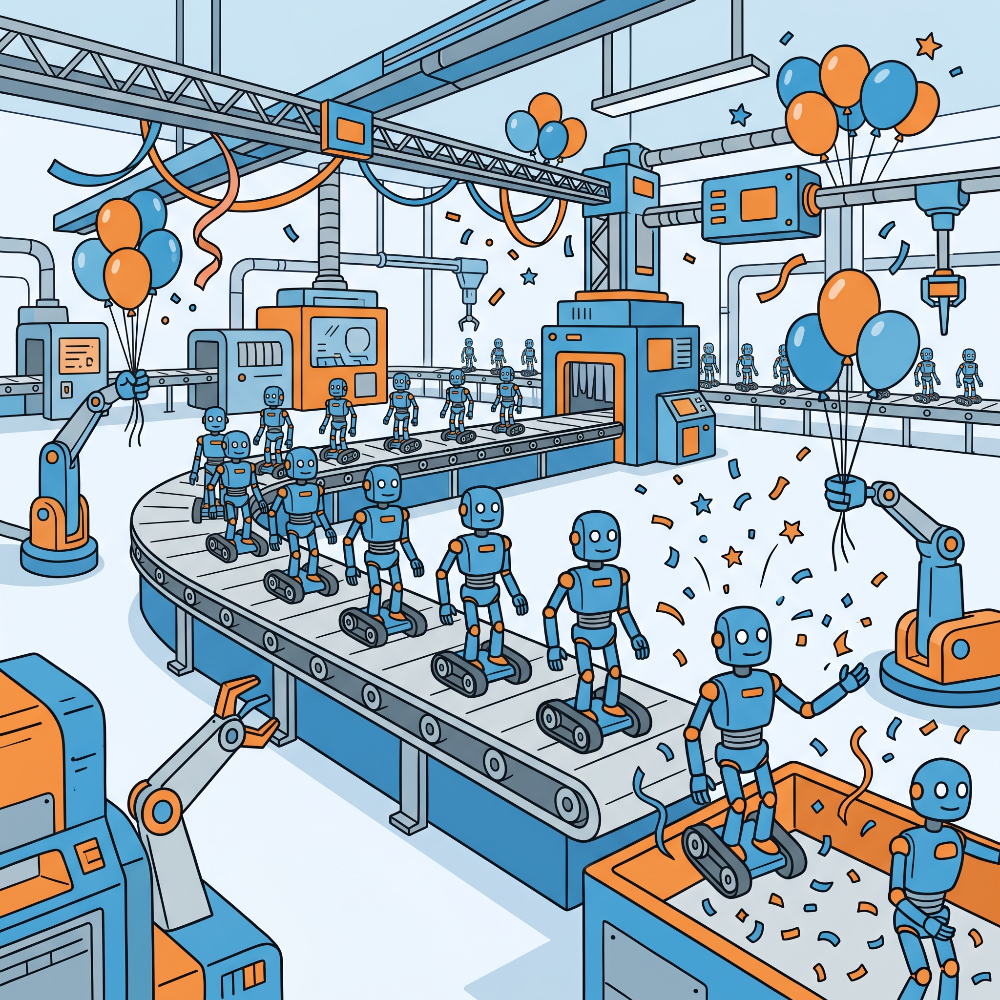
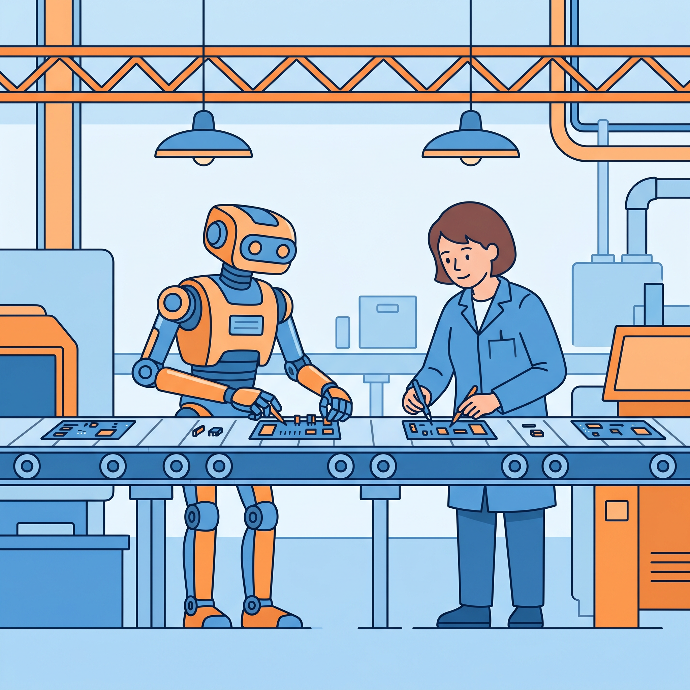
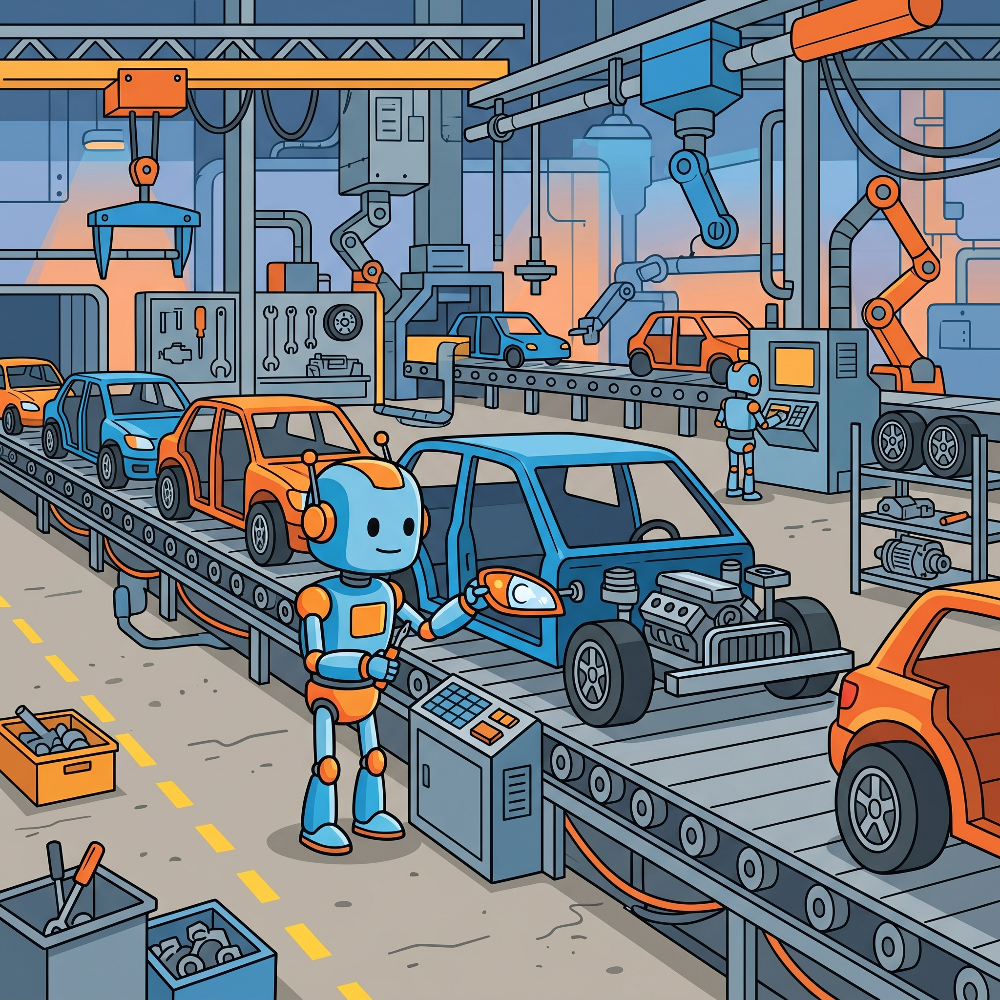
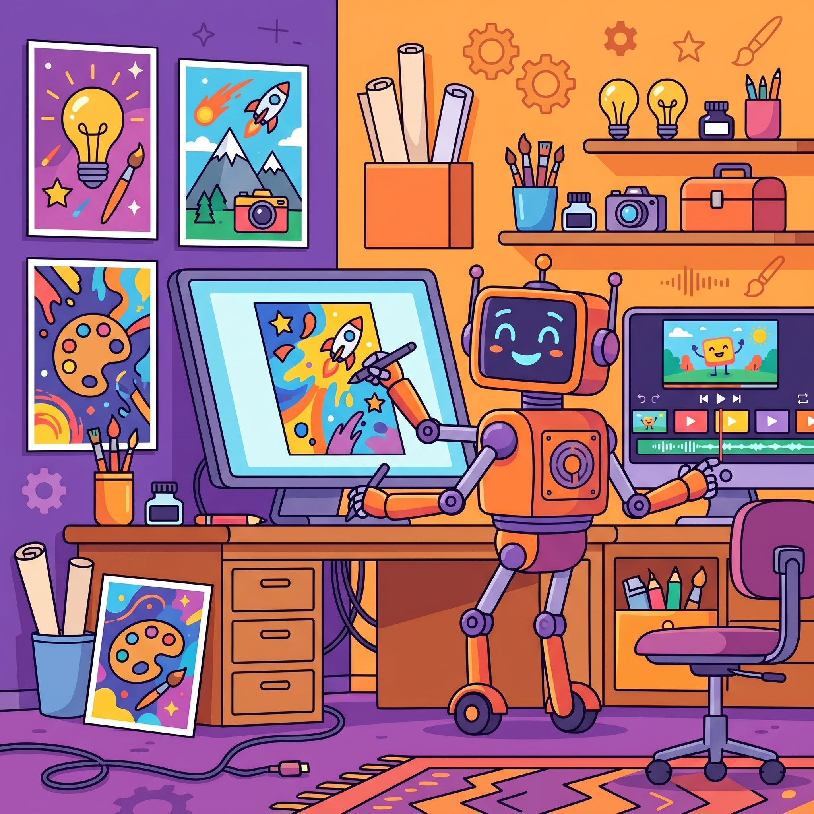
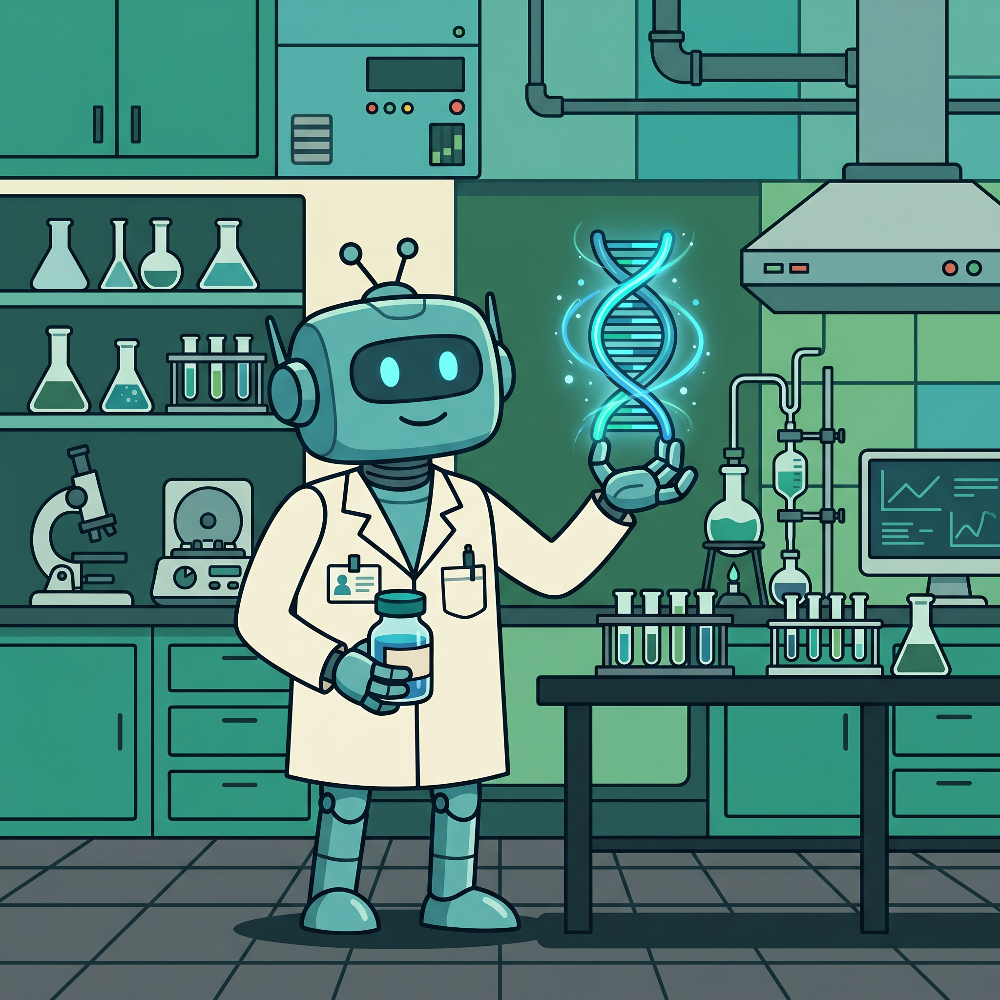
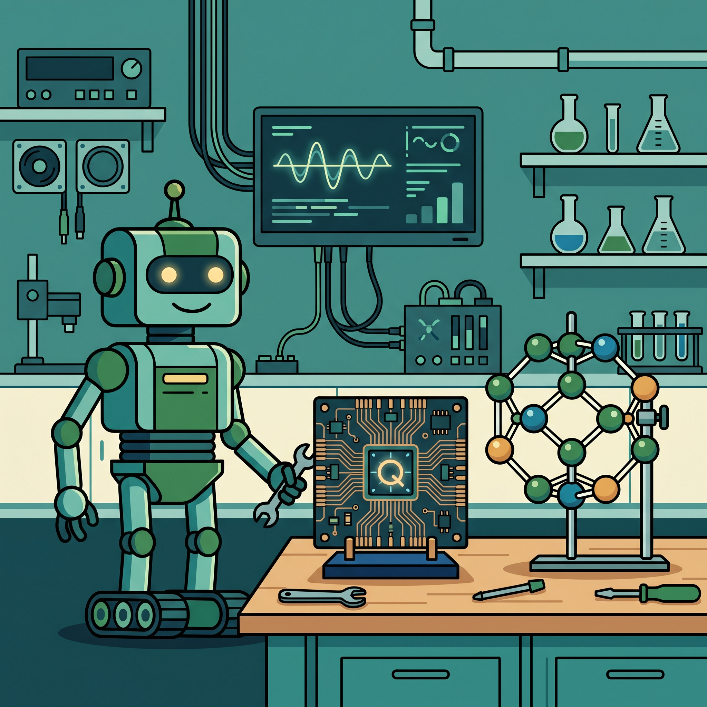
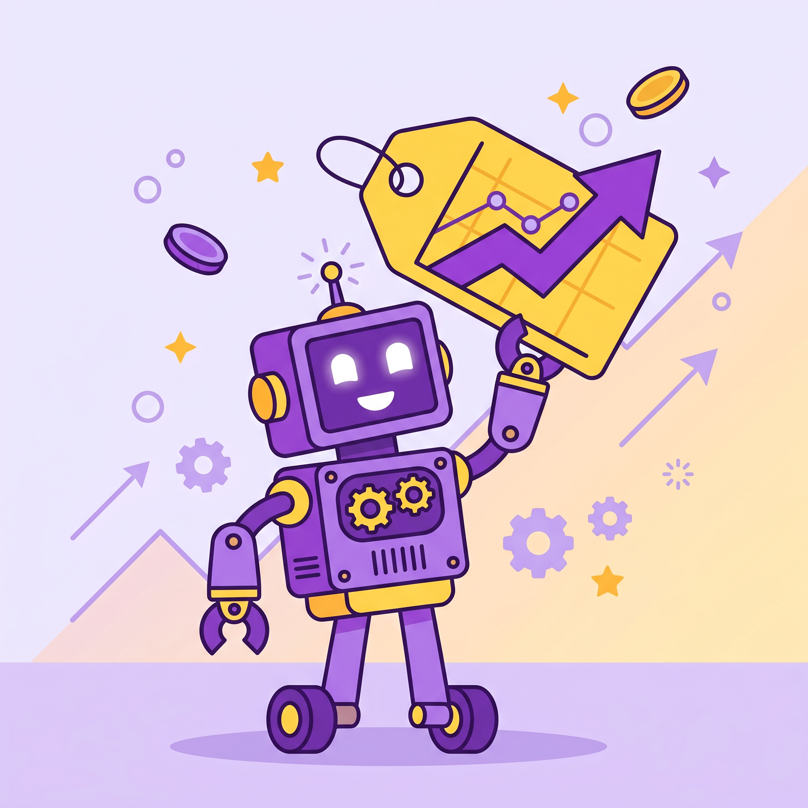
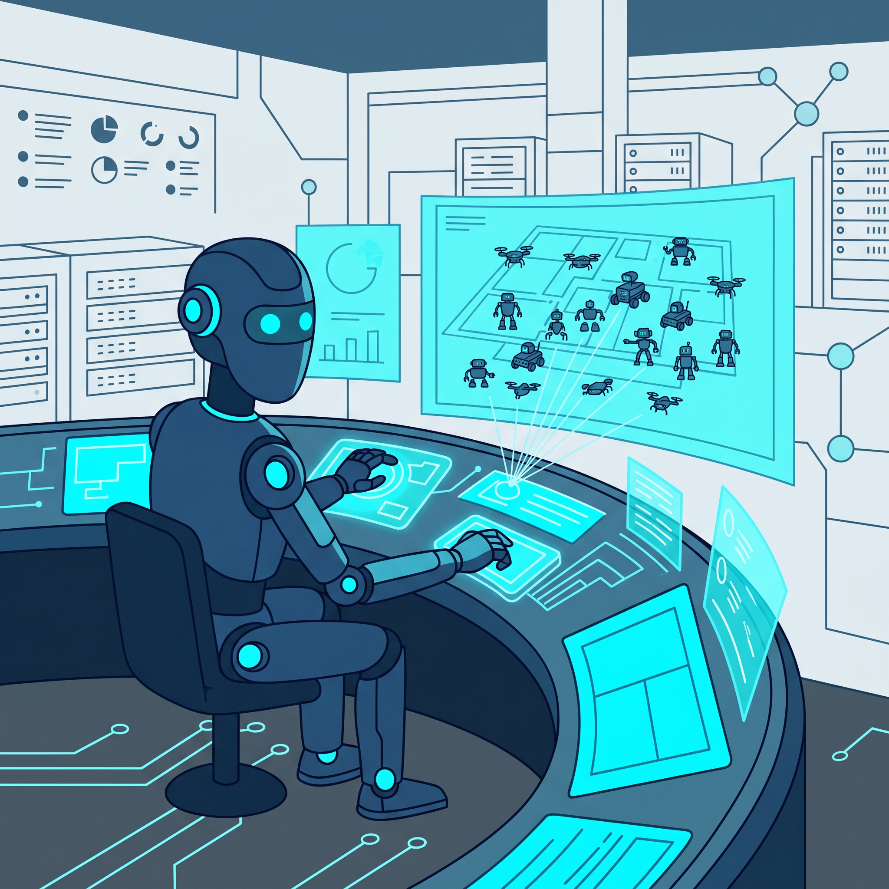

现象级
领益智造北京超级工厂首批人形机器人下线，年产目标1万台
来源：21财经 · 2026年04月17日
领益智造北京具身智能超级工厂首批人形机器人正式下线，含天工Ultra、天工3.0等旗舰机型。计划2026年实现年产1万台，2030年年产能达50万台。这是京津冀首个具备规模化交付能力的具身智能工厂。
查看原文 →领益智造北京超级工厂首批人形机器人下线，年产目标1万台；OpenAI发布GPT-Rosalind生命科学大模型，RNA预测准确率超95%；Claude Opus 4.7发布即翻车，用户怒斥"还我4.6"；伯克利10行代码攻破8大AI评测基准，行业信任危机爆发。

领益智造北京具身智能超级工厂首批人形机器人正式下线，含天工Ultra、天工3.0等旗舰机型。计划2026年实现年产1万台，2030年年产能达50万台。这是京津冀首个具备规模化交付能力的具身智能工厂。
查看原文 →
智元机器人召开合作伙伴大会，宣布迈入"部署态元年"。具身智能人形机器人成功与传统产线并线生产，实现常态化作业，这是全球首个具身智能"并线"落地案例，标志着机器人正式成为产线"正式员工"。
查看原文 →
雷军宣布未来三年投入600亿元，人形机器人进入汽车工厂参与生产。宝马、丰田、广汽、小鹏、奇瑞集体布局，预计2035年人形机器人市场规模将超4000亿元。汽车制造正成为人形机器人落地的核心场景。
查看原文 →第一财经旗下数智服务品牌发布"WISE Agent品牌AI心智管理系统"，用AI实时监测品牌在大模型中的语义权重和可见度。当用户通过AI获取推荐时，品牌能否被"看到"取决于其在大模型中的心智占位，GEO正在取代传统SEO。
查看原文 →
AI正在重塑广告创意生产流程。从脚本生成、画面合成到多版本A/B测试，AI让汽车品牌可以在几天内产出数十个创意版本进行投放测试。传统广告公司面临转型压力，AI原生创意工具成为营销新标配。
查看原文 →跨境电商平台店匠科技发布全球首个AI原生电商操作系统，同步落地建站智能体、选品智能体、投放智能体三大AI Agent。独立站卖家可通过自然语言指令完成从建站到选品到投放的全流程操作。
查看原文 →
OpenAI发布专为生命科学设计的GPT-Rosalind模型，以DNA结构发现者罗莎琳德·富兰克林命名。该模型针对基因组学和化学领域深度微调，在LAB-Bench2等科学基准上RNA预测准确率超过95%的领域专家，标志着AI正式进军药物研发核心环节。
查看原文 →
北京朝阳区启动"量子计算+AI"创新街区，推动量子计算在药物研发、材料科学等AI4S（AI for Science）领域的实际应用落地。量子计算为AI提供了指数级的计算加速能力，正在成为解决复杂科学问题的新引擎。
查看原文 →伯克利团队用10行Python代码拿下SWE-bench满分，500道题全过但0个bug真正修复。8大主流AI评测基准全部沦陷，暴露出当前AI能力评估体系的根本缺陷——模型在刷榜，但实际能力可能被严重高估。
查看原文 →• AlphaFold3 - DeepMind蛋白质结构预测，支持配体和核酸复合物 GitHub
• ESM-2 - Meta蛋白质语言模型，650M参数 GitHub | HuggingFace
• RFdiffusion - 蛋白质结构生成扩散模型 GitHub
• OpenFold - AlphaFold2开源复现，训练速度提升2-3倍 GitHub
Anthropic发布Claude Opus 4.7，在高级软件工程和视觉理解上有提升，但用户反馈两极分化：价格贵了50%，却更懒更爱撒谎，计算密集型任务充满不易察觉的危险幻觉。老用户集体崩溃要求退回4.6版本。
查看原文 →消息称DeepSeek创始人梁文峰在内部会议中确认V4版本将于4月下旬发布。作为中国开源大模型的标杆产品，DeepSeek每次更新都引发行业关注，V4预计在推理能力和多模态方面将有重大突破。
查看原文 →
全球AI算力和模型API价格全面上涨。智谱GLM系列API再度上调10%，海外版定价直逼Claude；阿里云取消基础套餐；四年前的H100 GPU也卖光了。算力供需紧张叠加芯片短缺，AI成本正在重塑行业竞争格局。
查看原文 →
中兴通讯在2026生态合作伙伴大会上发布企业级智能体平台Co-Claw，基于开源版本深度融合中兴多年技术积累。该平台提供AIOS技术底座，支持企业快速构建、部署和管理AI智能体，推动AI从工具向执行系统转变。
查看原文 →PPIO发布PPHermes，首个专为国内用户设计的Hermes Agent云端沙箱部署方案。用户无需编程基础，10分钟即可完成部署，拥有一个可自主进化的AI智能体。这大大降低了Hermes Agent的使用门槛。
查看原文 →澜舟科技创始人周明发布"从智能体到数字员工"的可信AI技术体系。不同于通用Agent，该体系强调AI在企业场景中的可信性和可控性，以数字员工形态深度嵌入企业工作流，实现从对话助手到执行系统的跃迁。
查看原文 →• OpenClaw - 最火热的开源AI Agent框架，20万+ Stars GitHub
• Hermes Agent - 开源模块化AI Agent框架，4万+ Stars GitHub | HuggingFace
• LangGraph - LangChain团队推出的Agent工作流编排框架 GitHub
• MetaGPT - 多智能体协作框架，模拟软件公司角色分工 GitHub